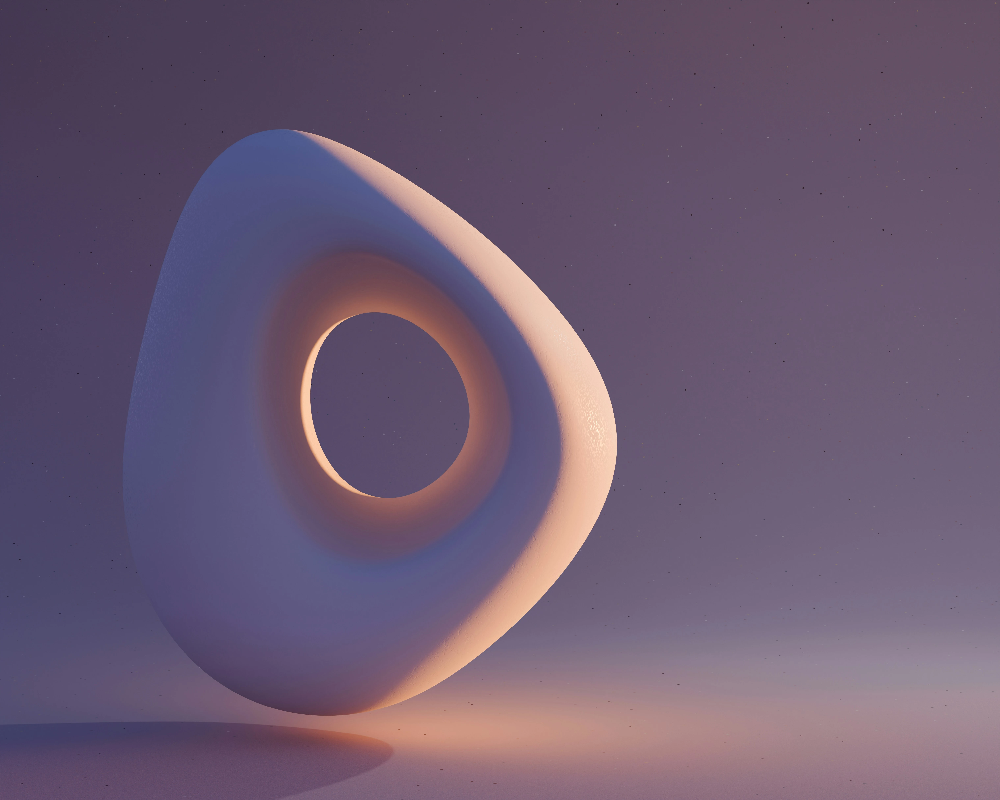
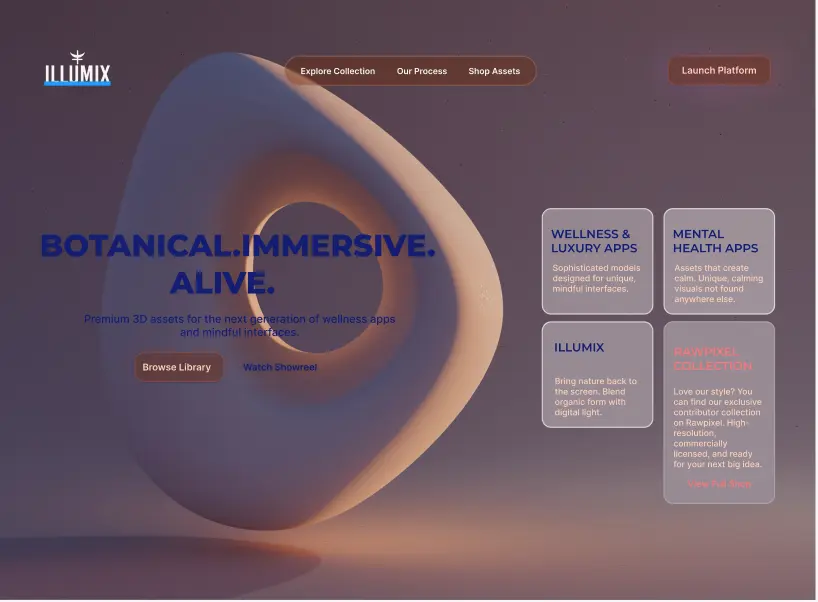
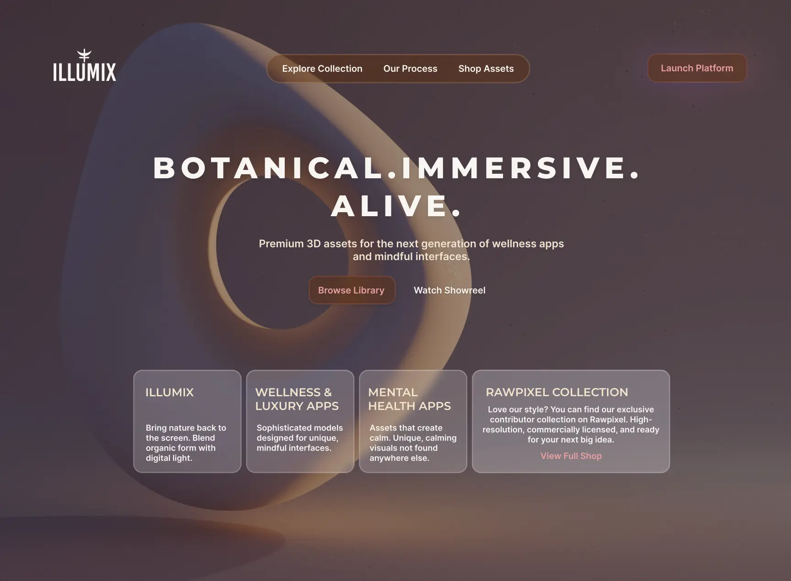
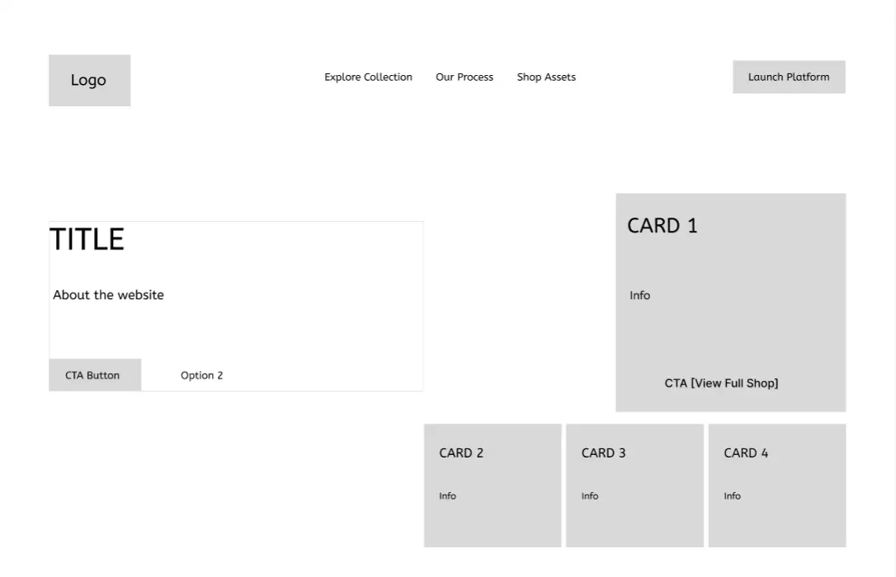
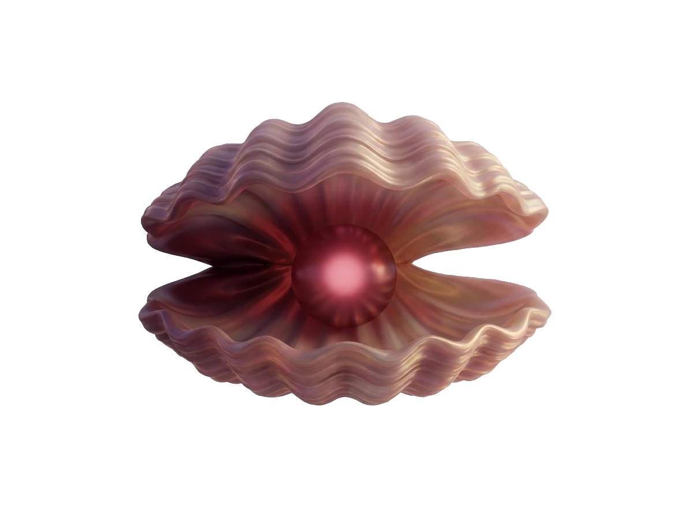
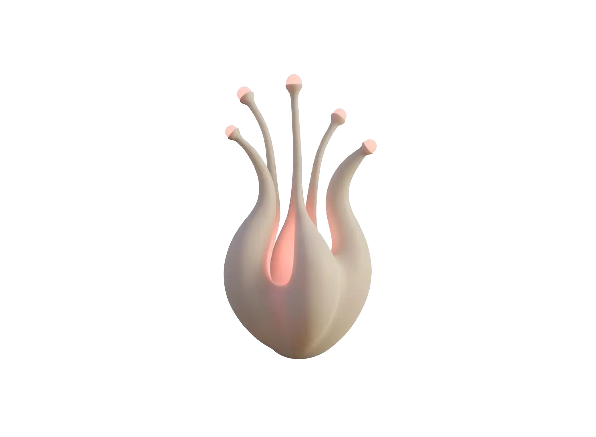
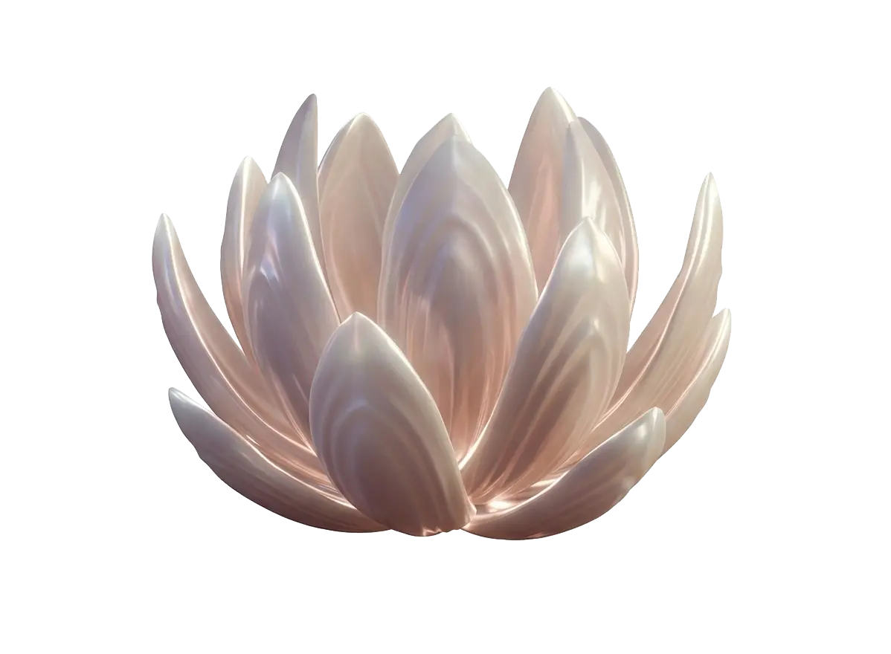
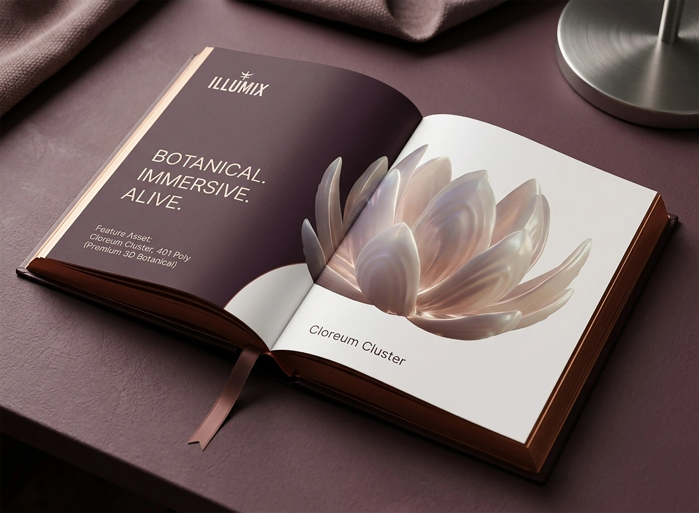
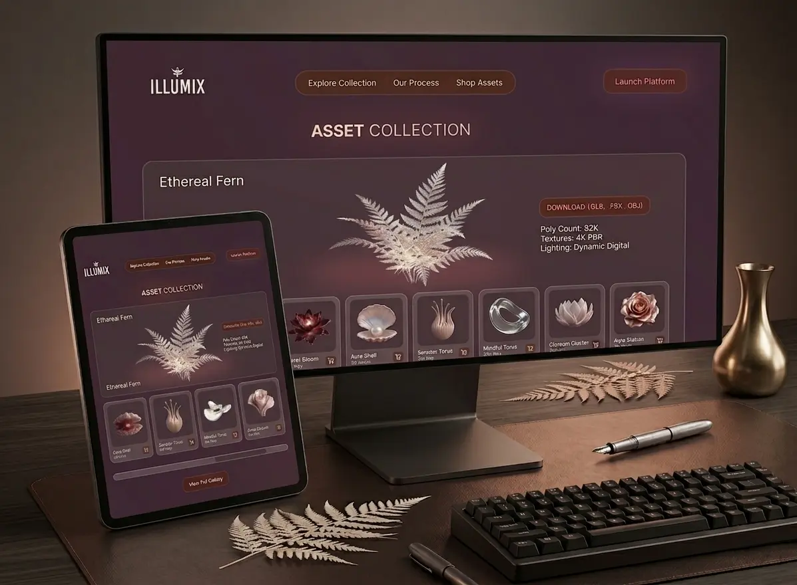
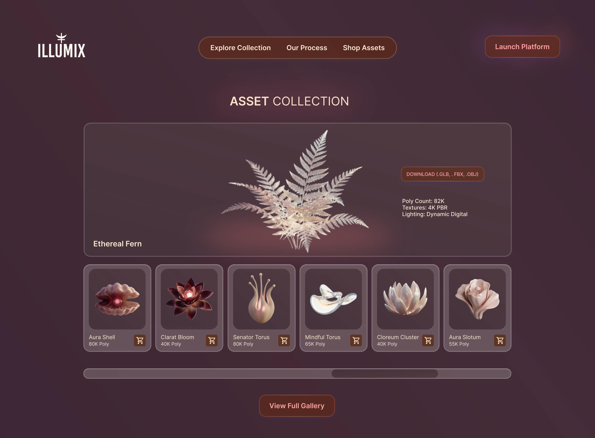

- THE ROLE: Lead UI designer & Visual Strategist
- THE TOOLS: Figma, Photoshop, Illustrator
- PROJECT TYPE: Digital wellness asset library


Project Overview: Illumix Asset Library
Illumix is a digital storefront for high-end 3D botanical assets. The objective was to replace the standard, cluttered UI of traditional asset marketplaces with a streamlined, "soft luxury" experience. I focused on a high-contrast, clean layout that highlights the quality of the assets without visual noise, utilizing organic 3D-inspired forms and glassmorphism to mirror the nature of the products being sold.


PROJECT PHASES & PROCESS
STAGE 01: Wireframing & Iteration

Initial Figma Wireframe - Focusing on hierarchy
AI-Assisted Art Direction
To move beyond generic stock imagery, I acted as an Art Director using Gemini to generate a custom suite of organic assets. By carefully prompting for "soft luxury" aesthetics and specific color palettes, I curated a cohesive library of digital botanicals. This allowed me to rapidly prototype high-fidelity visuals that perfectly aligned with the brand's immersive wellness theme without the need for traditional 3D modeling.
STAGE 02: Generative Asset Creation




THE PROBLEM: The "Clinical" Fatigue Most wellness and mental health apps feel sterile, flat, and overly medical. This "clinical" aesthetic often creates a barrier for users seeking a premium, restorative experience. Furthermore, current asset libraries lack cohesive, high-end 3D elements that can scale across luxury digital platforms without looking like "stock" graphics. THE SOLUTION: Organic Digital Models A 3D asset library that uses "Digital Light" and "Organic Form" as its primary design language. By providing designers with hyper-realistic, botanical-inspired 3D models, Illumix enables the creation of "Immersive Wellness", interfaces that feel alive, premium, and deeply human rather than mechanical.


Immersive Gallery Navigation: I implemented a custom horizontal scroll indicator to provide clear visual feedback as users explore the 3D asset library, ensuring a fluid and intuitive browsing experience.
Key Findings
The main takeaway from this project is that for a design-focused store, the site itself shouldn't fight the products for attention. By trading the usual crowded, grid-heavy layout for a more spacious, gallery-like feel, I found that designers were less overwhelmed and actually took the time to look at the details of the assets. It proved that a cleaner, more intentional interface doesn't just look better; it helps people actually see the value in what they're buying and makes the whole experience of browsing feel a lot more fluid.